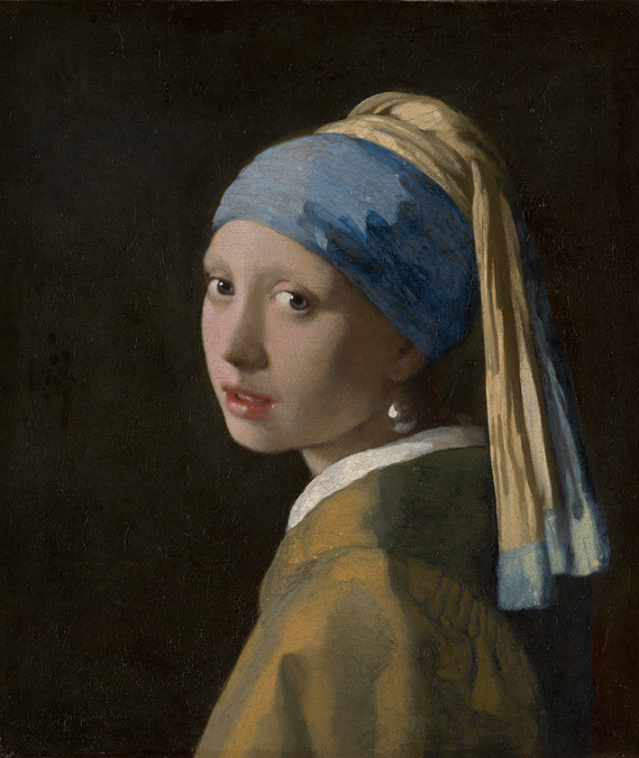
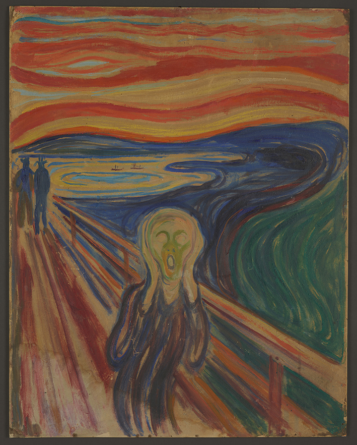
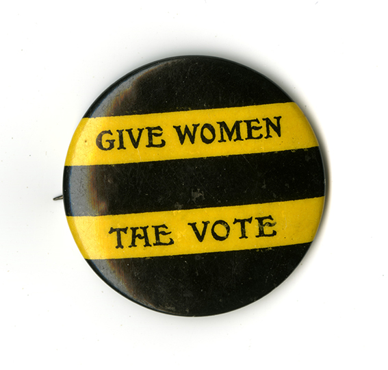
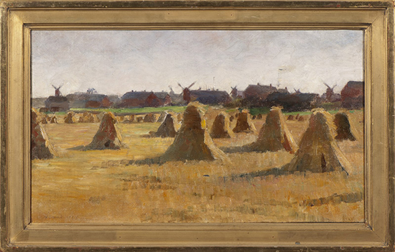
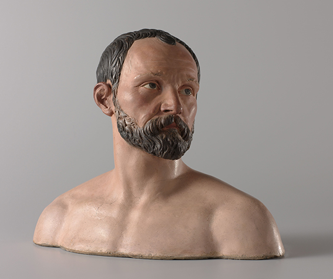
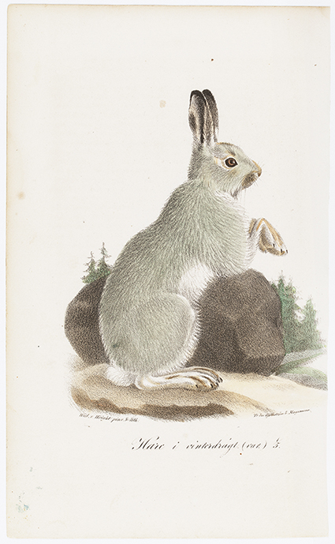
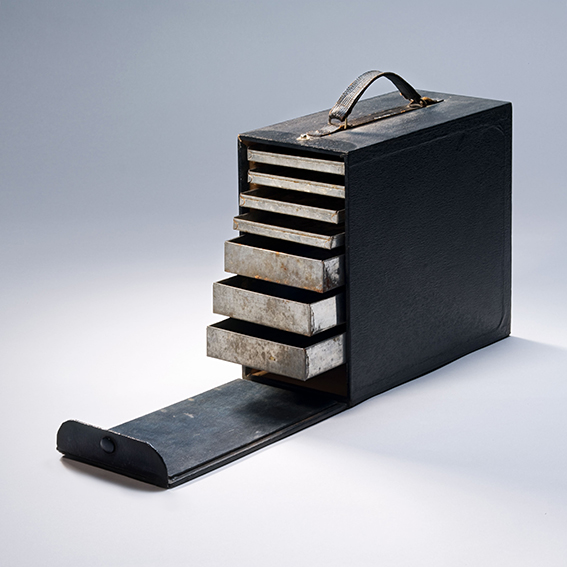
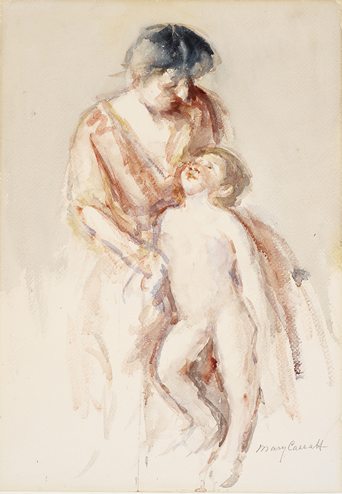
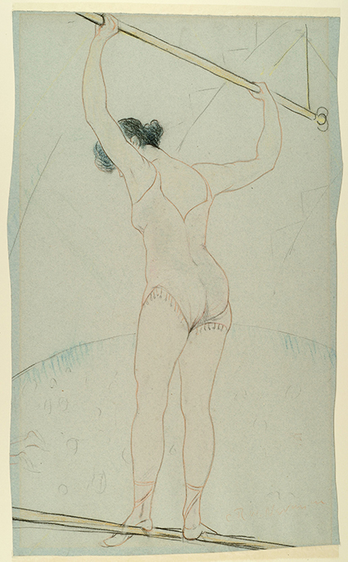

두건을 쓰고 진주 귀고리를 한 인물의 상반신 초상화이다. 인물의 몸은 화면 왼쪽을 향하고 고개는 정면을 향해 반쯤 돌리고 있다. 인물의 피부는 밝고 눈동자는 검다. 파란 천이 이마 위를 감싸고 베이지색 천이 정수리부터 어깨까지 늘어뜨려져 있다. 옷은 황토색이다. 배경은 검다.

학 일곱 마리가 서 있는 그림을 담은 여섯 폭의 병풍이다. 학은 곧게 서 있거나 고개를 숙이거나 뒤를 바라보는 등 서로 다른 자세로 있다. 학의 몸통은 희고 머리, 목, 날개 끝부분은 검다. 배경은 황토색이다. 병풍의 테두리는 갈색이며 작고 촘촘한 꽃무늬가 있다.

사자의 몸 여러 부분을 그린 스케치이다. 누런 종이에 연필로 간략하게 그렸다. 화면 위쪽 절반에는 앉아 있는 사자의 옆모습이 얼굴이 생략된 채 있고 아래쪽 절반에는 발바닥, 발, 다리, 얼굴의 형태가 흩어져 있다.
봉우리가 하나인 붉은 산이 우뚝 솟아 있는 풍경화이다. 그림자가 없이 평평한 색면으로 화면을 구성했다. 산 너머로 파란 하늘이 있고 작은 구름덩이가 하늘을 촘촘히 채운다. 산은 화면의 절반 정도를 차지하는 크기로 오른쪽에 치우쳐 있다. 산의 가장 윗부분은 짙은 갈색이고 여러 갈래의 흰 선이 있으며 아랫부분은 초록색이다.

한 손으로 턱을 괴고 앉아 있는 자세의 흰 석고상이다. 인물은 나체이고 체형은 다부지며 머리카락은 짧다. 무릎 높이의 표면이 거친 덩어리에 앉아 있다. 상체를 앞으로 기울인 채 화면 오른쪽을 향해 있다. 오른 손등으로 턱을 받치고 왼손은 무릎 위에 두었다.

얇고 긴 옅은 초록색 풀 한 다발이 화면 가운데에 있는 그림이다. 풀 사이에는 베이지색 마른 풀이 둥글게 엉킨 채 얹어져 있다. 배경은 텅 비어 있고 연한 갈색이다.

비슷한 크기의 과일 네 개가 받침이 있는 둥근 그릇에 가득 담겨있는 그림이다. 아이보리색 종이 가운데에 검은 선으로 간결하게 그렸다.

양손으로 귀를 막고 눈을 크게 뜬 채 입을 벌리고 있는 사람 한 명이 있는 그림이다. 인물은 난간이 있는 다리 위에서 정면을 바라보고 있다. 다리 너머로 붉은 하늘과 파란색, 초록색 배경이 있다. 다리를 제외한 인물과 배경은 구불거려 일렁이는 듯하다.

기차역 내부의 풍경을 담은 그림이다. 역은 층고가 아주 높다. 화면 왼쪽에는 검은색 기차 한 대가 연기를 뿜으며 정면을 향해 있다. 나머지 공간에는 수십 명의 사람이 밀집해 있다. 기차와 사람들 너머에 뻥 뚫린 커다란 출입구가 있다. 출입구 밖으로 뿌연 실외가 보인다. 전체적으로 어두운 색감이다.

새의 머리 형상이 달린 하늘색 반투명 유리그릇이다. 그릇은 위가 넓고 아래가 좁으며 굽이 있다. 새의 머리 형상은 그릇 위쪽에 달려있다. 새는 긴 부리를 벌리고 그릇 밖을 향해있다.

수직선과 수평선이 화면을 여러 칸으로 나누는 추상화이다. 화면은 정사각형이다. 칸마다 비례는 서로 다르다. 칸은 대부분 흰색이며 부분적으로 빨간색, 노란색, 파란색이다.

세 여성이 정면을 바라보고 있는 사진이다. 한 명은 서 있고 두 명은 그 앞에 나란히 앉아있다. 세 사람은 피부가 밝은 편이고 검은색 드레스를 입고 있다. 드레스에는 하얀 깃이 있다. 배경색은 연한 갈색이다.

연한 회색 그릇이다. 위는 넓고 아래는 좁으며 굽이 있다. 표면은 고르지 않고 요철이 있다. 사선으로 무늬가 있다.

노란색 가로줄 두 개가 있는 동그란 검은색 버튼이다. 윗줄에는 ‘GIVE WOMEN’이라고 쓰여있다. 아랫줄에는 ‘THE VOTE’라고 쓰여있다. 글씨는 모두 검은색이고 대문자이다.

황토색 논밭이 있는 풍경화이다. 세모나게 쌓은 짚 더미 수십 개가 논밭 군데군데 있다. 논밭 너머 멀리에 집 여러 채와 풍차 여러 개가 있다. 하늘은 옅은 회색이다.

‘I'M NOT GIVING UP AND NEITHER SHOULD YOU!’라는 문장을 손 글씨로 크게 쓴 포스터이다. 배경은 빨간색이고 글씨는 검은색이다. 모두 대문자이다.

수염이 있는 사람의 흉상이다. 수염과 머리카락은 흑갈색이다. 머리카락은 짧다. 인물은 나체이고 피부는 밝은 편이다. 고개를 살짝 돌려 화면의 오른쪽 위를 바라보고 있다.

회색 토끼가 두 발로 서 있는 그림이다. 토끼는 화면 오른쪽을 향해 측면을 보이고 있다. 토끼 너머에는 갈색 바위가 있고, 바위 너머로 초록색 나무 몇 그루가 작게 보인다.

은색 서랍이 들어 있는 검은 상자다. 상자의 한쪽 면이 열려 있어 은색 서랍이 보인다. 서랍은 일곱 칸이다. 아래쪽 몇 칸이 살짝 나와 있다. 서랍 군데군데 녹이 슬어 있다. 상자 윗면에 손잡이가 있다.

뿌연 연보라색조의 풍경화이다. 풍경은 흐릿하여 대상이 불분명하다. 화면 왼쪽은 색이 진하고 오른쪽은 연하다.

여성과 어린아이가 서로를 바라보고 있는 그림이다. 아이는 여성 앞에 가까이 붙어 서 있다. 여성은 아이를 내려다보고 아이는 위를 올려다본다. 여성은 살구색 옷을 입고 아이는 발가벗은 채 있다. 물감으로 옅게 스케치했다.

봉 위에 두 발로 서 있는 사람의 뒷모습이다. 두 손으로 머리 위에 있는 봉을 잡고 있다. 머리카락은 검고 피부는 밝은 편이다. 몸에 달라붙는 옷을 입었다. 전체적으로 옅은 색감이다. 얇은 선으로 형태를 그렸다.

고양이 여러 마리가 새 한 마리를 둘러싸고 있는 그림이다. 고양이 한 마리가 바닥에 있는 새를 한 발로 잡고 있다. 두 마리가 이 모습을 지켜보고 있다. 그 뒤로 두 마리가 뒷모습을 보이고 있다. 검고 얇은 선으로 촘촘하게 그렸다.